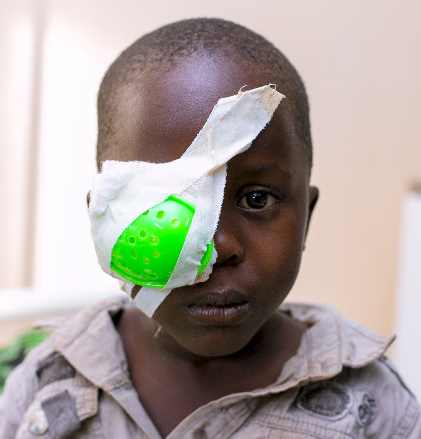
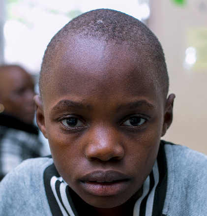
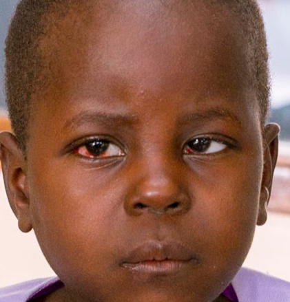

Helping Children Overcome Childhood Blindness
Laurent, 3, had a congenital cataract in his right eye. Screening and referral led to successful surgery.
Read Laurent's story →Impact Stories

Laurent, 3, had a congenital cataract in his right eye. Screening and referral led to successful surgery.
Read Laurent's story →
Naomi Rodrick Mkondya is an eleven-year-old pupil at Itepula Primary School, living with her parents in Itepula Igamba.
Read Naomi story →
Rehema Langson Lwinga is a three-year-old girl living in Mbebe, Tunduma Town Council. She lives with her mother and..
Read Rehema story →
A Nine-year-old Vitalis Masebo, a Standard One pupil from Mapinduzi Primary School in Tunduma, lives with his grandparents after losing his parents at age five.
Read Vitalis story →Projects
Community-level screening for childhood eye conditions, with referral to district hospitals, regional referral hospitals and tertiary facilities for surgical treatment.
| Children screened | 6110 |
| Referred to district hospital / regional RH | 135 |
| Referred to tertiary facility | 22 |
| Cataract surgeries performed | 32 |
| Other surgeries performed | 2 |
Chapakazi Group is a one-year women’s economic empowerment project supporting 10 women through income-generating activities, savings, small businesses, entrepreneurship and financial management, while strengthening cooperation, mutual support and community participation to improve livelihoods and household economic well-being.
Reports & Publications